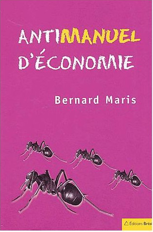

Je rêve ! Sur le site de bforbank : "mon banquier c'est vous", je cite la dernière phrase du texte :
En conclusion, les religions du Livre ont toutes prohibé l’usure et le prêt à intérêt. Ces interdictions visaient à protéger les plus faibles contre eux-mêmes et contre les puissants. Elles sont globalement devenues moins fortes à mesure que se sont développées les sociétés modernes.
Donc en 2017 un banquier qui pratique l'usure, bforbank en l’occurrence, t'expliques sur son site internet qu'il a profité du déclin de la religion Catholique pour te faire travailler un certain nombre d'années de ta vie ! pour lui payer des intérêts sur de l'argent qu'il t'a prêté et qu'il a créé à partir de rien ! C'est ton travail futur qui va créer cet argent et uniquement ton travail ! Mmmh j'ai mal pour toi ! J'ai tellement mal pour toi que je te hurle depuis des jours d'ouvrir les yeux sur ta condition d'esclave bancaire ! J'ai appris dans le lien suivant que l'Église avait rendu l'usure licite en 1917 ! Il y a cent ans !
Tu te rends compte du symbole ? Cela fait cent ans que l'Église a autorisé l'usure ! De plus l'Islam continue de l'interdire (sauf chez les Sunnites). Pour ceux qui veulent en savoir plus, regardez cette vidéo intitulée l'Argent Dette :
L'Argent Dette de Paul Grignon (FR intégral) par bankster2008
Vous pouvez aussi lire ma lettre ouverte à un capitaliste dans laquelle je présente ma vision de l'économie qui devrait être au service de l'Homme au lieu de l'asservir. Je voudrais rendre un très très vibrant hommage à Bernard Maris, économiste mais pas que, assassiné dans les attentats de Charlie Hebdo sans qui ma pensée économique ne serait pas ce qu'elle est aujourd'hui et ne vous appellerai peut être pas à récupérer ce qui vous appartient : votre temps de vie sur Terre ! Si vous voulez vous intéresser à son travail lisez son anti-manuel d'économie qui porte tellement bien son nom !
